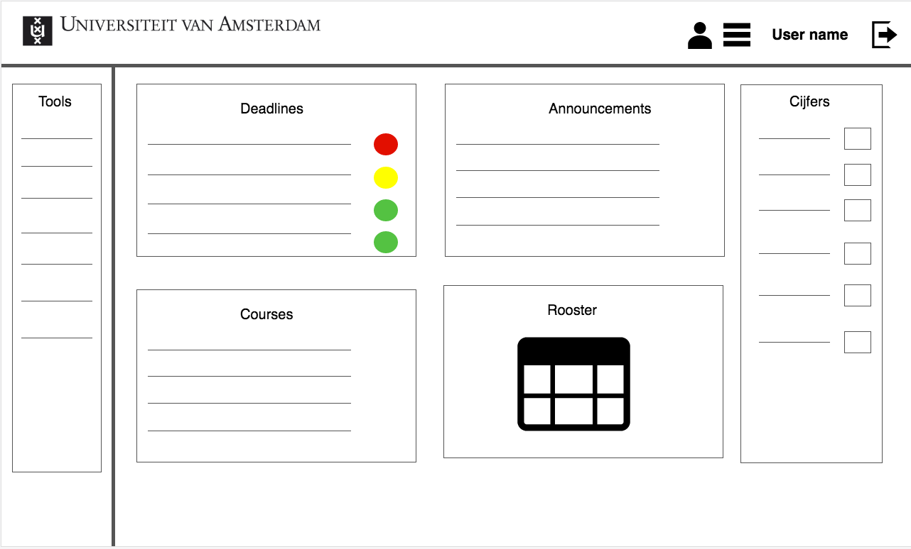
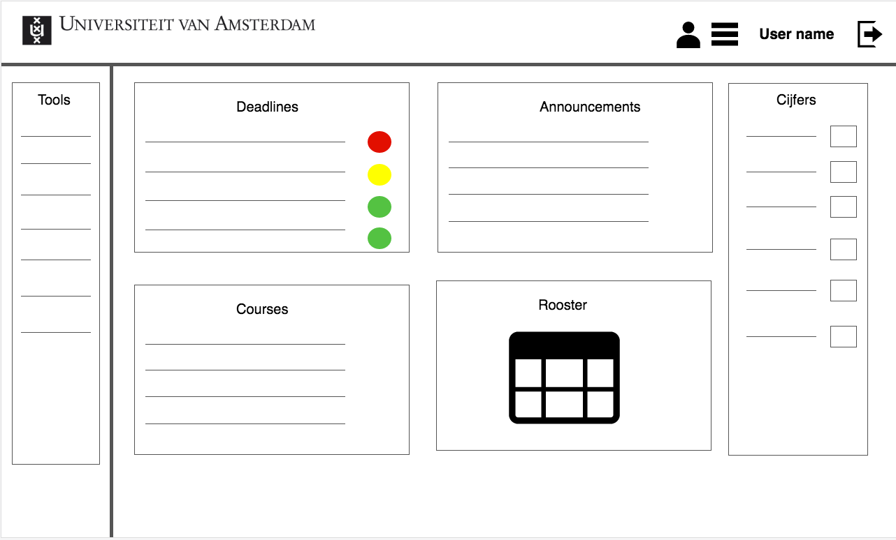

Concept
Wanneer je aan de bètafaculteit van de UvA studeert, kun je niet zonder Blackboard. Blackboard is de elektronische omgeving die wordt gebruikt om informatie te delen. Zo vind je er als student leesmateriaal, de behandelde slides van colleges en de studiewijzer van een vak. Tegelijkertijd is het de plek waar je als student opdrachten inlevert en feedback ontvangt. Een omgeving die zo belangrijk is als Blackboard, vraagt dan ook om gebruiksvriendelijkheid. Maar hoe gebruiksvriendelijk is Blackboard nou eigenlijk? Als gebruikers van Blackboard hebben wij daar onze twijfels over. Blackboard is namelijk niet erg overzichtelijk, en veel functies zijn lastig te vinden, of soms zelfs lastig te gebruiken. Daarom willen wij de website van Blackboard opnieuw inrichten, zodat Blackboard overzichtelijker en makkelijker in gebruik wordt.
Wireframes
 
